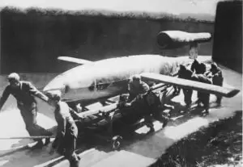
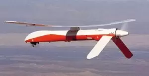
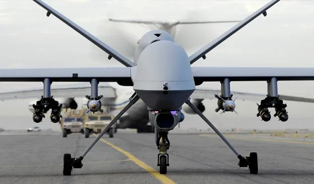
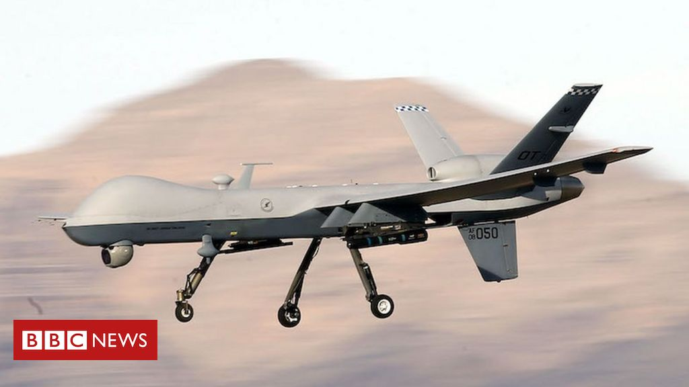

A história dos drones iniciou-se com uma inspiração em bombas voadoras alemãs do tipo V-1, popularmente conhecidas como buzz bomb. Recebeu esse nome devido ao barulho que fazia enquanto voava, sendo criada pela Alemanha, durante a Segunda Guerra Mundial.
O modelo que ficou marcado na história dos drones, ou seja, o qual conhecemos hoje em dia, foi desenvolvido pelo engenheiro espacial israelita Abraham (Abe) Karem. Segundo ele, em 1977, época de sua chegada nos EUA, eram necessárias 30 pessoas para controlar um drone. Diante desta situação, ele fundou a empresa Leading System e, utilizando poucos recursos tecnológicos, como fibra de vidro caseira e restos de madeira, deu origem ao Albatross. Com as melhorias alcançadas com o novo modelo – 56 horas no ar sem recarga de baterias e com três pessoas operando, o engenheiro recebeu financiamento da DARPA para os aprimoramentos necessários para o protótipo e, com isso, surgiu o novo modelo chamado Amber.
O veículo aéreo não tripulado americano MQ-1 Predator, um tipo de drone armado, tornou-se ícone do conflito de contra-insurgência travado pelos Estados Unidos em países como Afeganistão e Iraque.
 